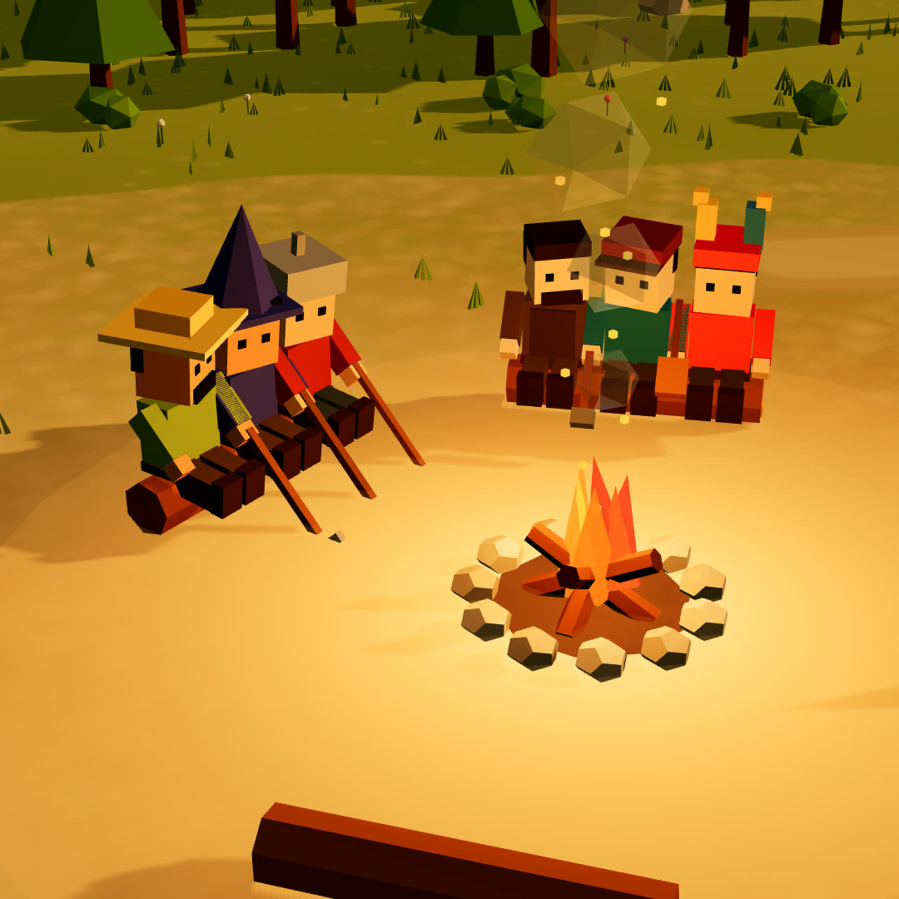
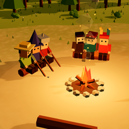

Bizim Köy
Sıfırdan bir köy kuruyoruz. Yoruma KATIL yazan herkes köye taşınıyor, ne yapılacağına da hep birlikte karar veriyoruz.
Nasıl
çalışıyor?
Bizim Köy bir EP Studio içerik serisidir. Yalnızca herkese açık kullanıcı adını ve yorum metnini kullanırız; konum, e-posta ya da özel mesaj okumayız. Ayrıntılar gizlilik politikasında.